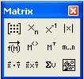

Matrix Toolbar and Operators |
Vector and Matrix operators can be used to evaluate expressions numerically or analytically. Click on the button in the Math toolbar to bring up the Matrix toolbar or choose Toolbars > Matrix from the View menu:
Operator: |
Keystroke: |
|
|  | [Ctrl] M |
|
[ |
||
[^] [−] 1 |
||
[|] |
||
[Ctrl] [−] |
||
|
[Ctrl] 6 |
||
[Ctrl] 1 |
||
[;] |
||
[*] |
||
[Ctrl] 8 |
||
[Ctrl] 4 |
||
[Ctrl] T |
||
Not on toolbar: |
[+] |
|
[−] |
||
[*] |
||
[^] |
||
| [/] |
Buttons on the Matrix toolbar insert some of the Matrix-related operators. You can also type any operator using its keystroke. You may also wish to use the other summation operators to perform sums, or the vector and matrix-related functions.
To learn what a button does, hover the cursor over the button until a tooltip shows the title and a description appears on the message line of the Status Bar.